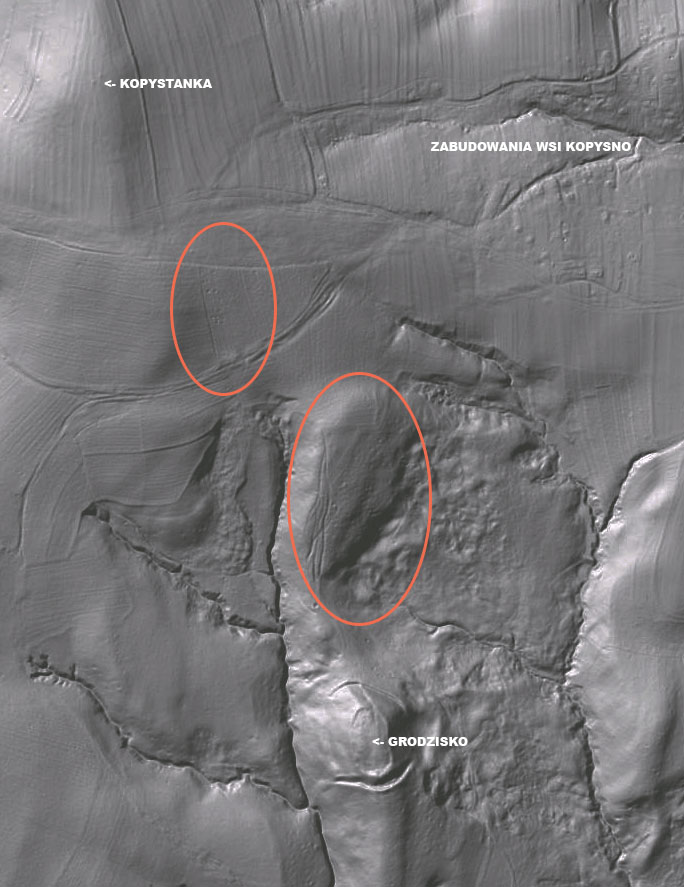
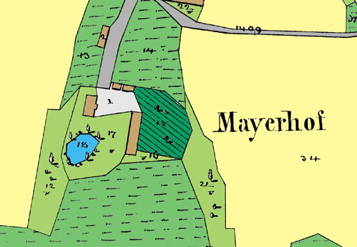

Dawne mapy Kopysna
Poniżej prezentujemy fragmenty archiwalnych map przedstawiających Kopysno i okolice.




Więcej map katastralnych z 1852 r. można znaleźć na stronie Archiwum Państwowego w Przemyślu.